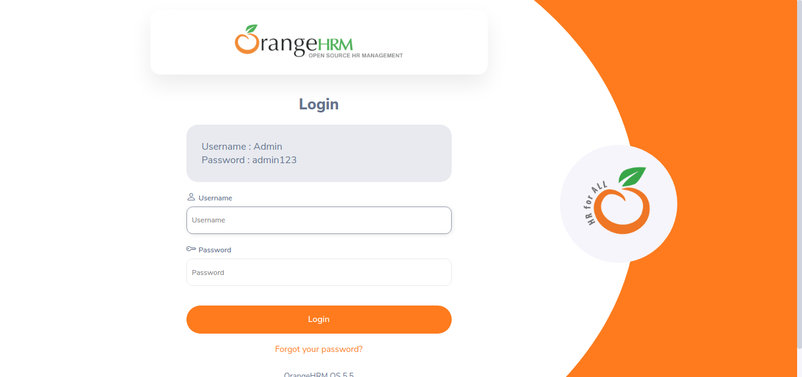
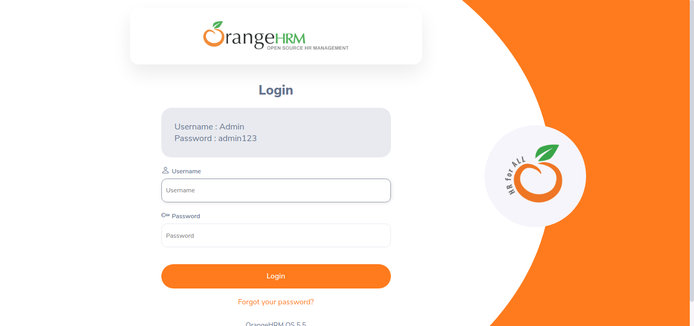

-
Login functionality
11:49:37 PM / 00:01:16:975 Fail
Login functionality
08.05.2023 11:49:37 PM 08.05.2023 11:50:54 PM 00:01:16:975 · #test-id=1FailLogin with valid credentialsGiven User able to see the the brand elementWhen User enters valid username "Admin" into email fieldStep skippedAnd User enters valid password "admin123" into password fieldStep skippedAnd User clicks on Login buttonStep skippedhooks.hook.tearDown(io.cucumber.java.Scenario)Login_with_valid_credentials FailLogin with invalid credentialsGiven User able to see the the brand elementWhen User enters valid username "username" into email fieldStep skippedAnd User enters valid password "password" into password fieldStep skippedAnd User clicks on Login buttonStep skippedThen User should get a proper warning message about credentials mismatchStep skippedhooks.hook.tearDown(io.cucumber.java.Scenario)Login_with_invalid_credentials
FailLogin with invalid credentialsGiven User able to see the the brand elementWhen User enters valid username "username" into email fieldStep skippedAnd User enters valid password "password" into password fieldStep skippedAnd User clicks on Login buttonStep skippedThen User should get a proper warning message about credentials mismatchStep skippedhooks.hook.tearDown(io.cucumber.java.Scenario)Login_with_invalid_credentials FailLogin with valid email and invalid passwordGiven User able to see the the brand elementWhen User enters valid username "Admin" into email fieldStep skippedAnd User enters valid password "password" into password fieldStep skippedAnd User clicks on Login buttonStep skippedThen User should get a proper warning message about credentials mismatchStep skippedhooks.hook.tearDown(io.cucumber.java.Scenario)Login_with_valid_email_and_invalid_passwordFailLogin with invalid username and valid passwordGiven User able to see the the brand elementWhen User enters valid username "username" into email fieldStep skippedAnd User enters valid password "admin123" into password fieldStep skippedAnd User clicks on Login buttonStep skippedThen User should get a proper warning message about credentials mismatchStep skippedhooks.hook.tearDown(io.cucumber.java.Scenario)Login_with_invalid_username_and_valid_passwordFailLogin without providing any credentialsGiven User able to see the the brand elementWhen User don't enter username into username fieldStep skippedAnd User don't enter password into password fieldStep skippedAnd User clicks on Login buttonStep skippedThen User should get a proper warning message about credentials requiredStep skippedhooks.hook.tearDown(io.cucumber.java.Scenario)Login_without_providing_any_credentials
FailLogin with valid email and invalid passwordGiven User able to see the the brand elementWhen User enters valid username "Admin" into email fieldStep skippedAnd User enters valid password "password" into password fieldStep skippedAnd User clicks on Login buttonStep skippedThen User should get a proper warning message about credentials mismatchStep skippedhooks.hook.tearDown(io.cucumber.java.Scenario)Login_with_valid_email_and_invalid_passwordFailLogin with invalid username and valid passwordGiven User able to see the the brand elementWhen User enters valid username "username" into email fieldStep skippedAnd User enters valid password "admin123" into password fieldStep skippedAnd User clicks on Login buttonStep skippedThen User should get a proper warning message about credentials mismatchStep skippedhooks.hook.tearDown(io.cucumber.java.Scenario)Login_with_invalid_username_and_valid_passwordFailLogin without providing any credentialsGiven User able to see the the brand elementWhen User don't enter username into username fieldStep skippedAnd User don't enter password into password fieldStep skippedAnd User clicks on Login buttonStep skippedThen User should get a proper warning message about credentials requiredStep skippedhooks.hook.tearDown(io.cucumber.java.Scenario)Login_without_providing_any_credentials
-
org.openqa.selenium.NoSuchElementException
5 tests
org.openqa.selenium.NoSuchElementException
5 failedStatus Timestamp TestName Fail 23:49:46 PM Given User able to see the the brand element Login functionality.Login with valid credentials.Given User able to see the the brand elementFail 23:50:01 PM Given User able to see the the brand element Login functionality.Login with invalid credentials.Given User able to see the the brand elementFail 23:50:15 PM Given User able to see the the brand element Login functionality.Login with valid email and invalid password.Given User able to see the the brand elementFail 23:50:30 PM Given User able to see the the brand element Login functionality.Login with invalid username and valid password.Given User able to see the the brand elementFail 23:50:44 PM Given User able to see the the brand element Login functionality.Login without providing any credentials.Given User able to see the the brand element
Started
Aug 5, 2023 11:49:37 PM
Ended
Aug 5, 2023 11:50:54 PM
Features Passed
0
Features Failed
1
Features
Scenarios
Steps
Timeline